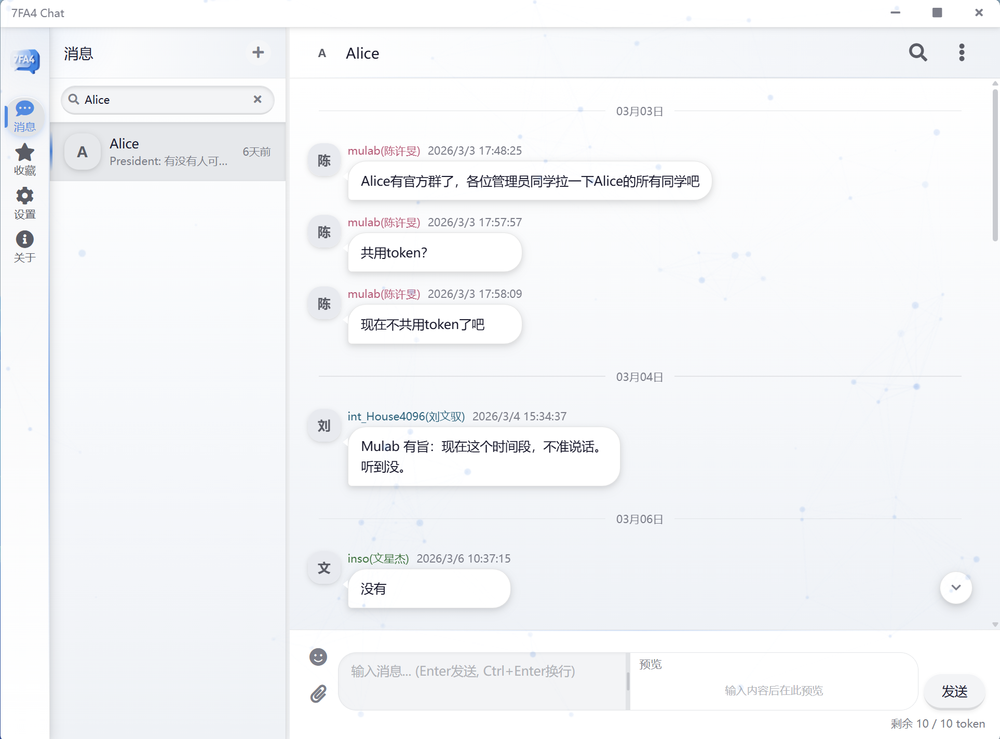
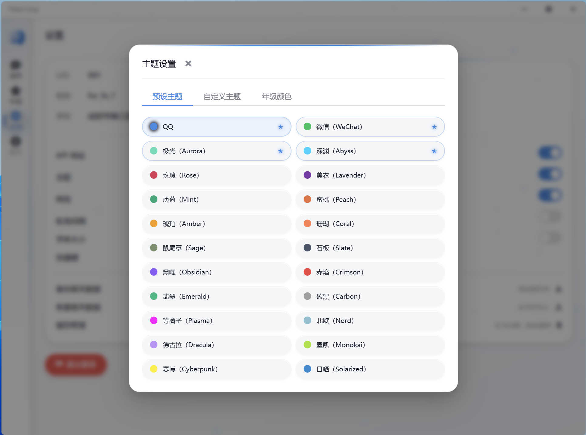
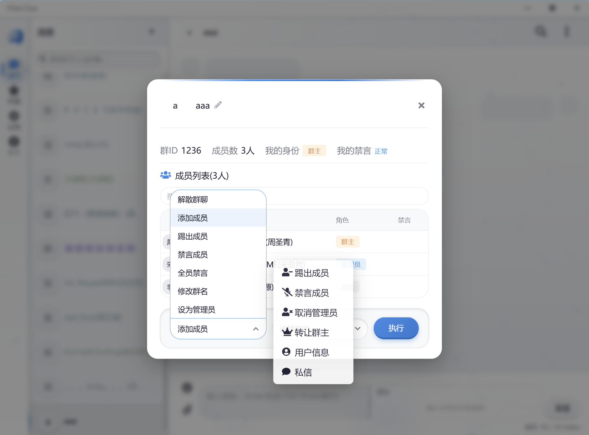
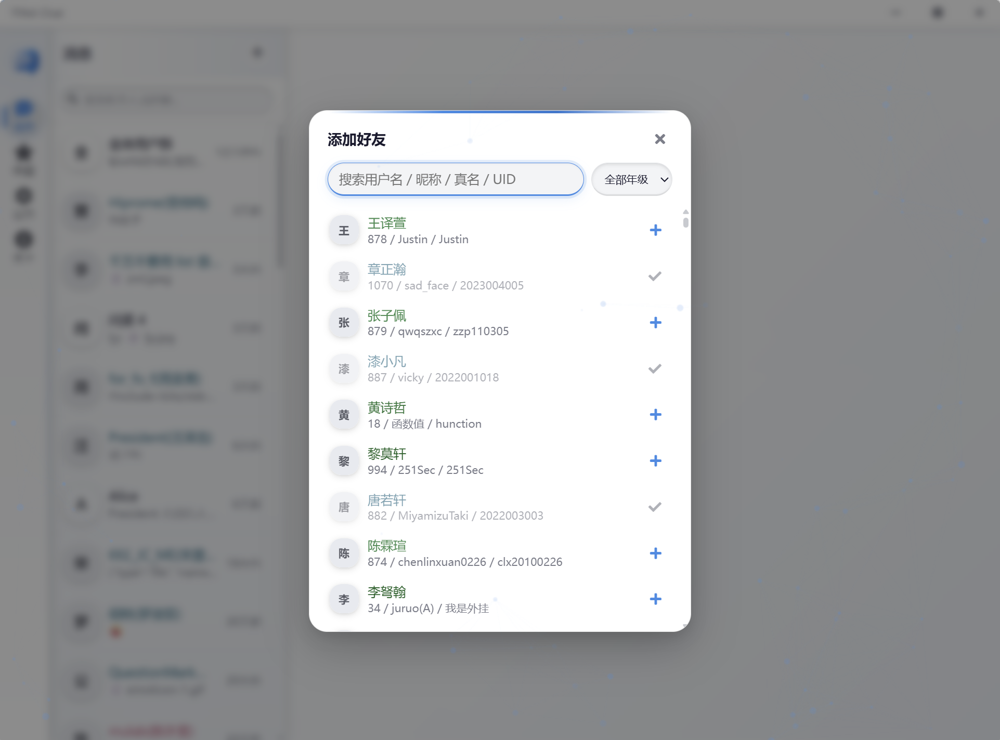

v3.1.0 · 全平台可用
一款轻巧、强大的
一款轻巧、强大的
跨平台学术交流软件
基于 7FA4 Chat API，使用 Electron + Vue3 构建。 Markdown、公式、表情包、文件传输、多主题、通知、截图……一应俱全。
- 50+项功能
- 22款主题
- 3大平台
- 32个版本

实时通知新消息即时推送
22 款主题一键切换
Markdown
KaTeX 公式
表情包
文件传输
多主题
系统通知
截图
消息搜索
多选转发
群管理
功能
为你准备的一切
从日常交流到群组管理，覆盖完整学术协作体验。
预览
优雅，从每一个像素开始
细腻的动画、玻璃拟态、深浅色多种主题……



下载
免费、开源、随时获取
选择你的平台立即下载，数据从官方 GitLab 包仓库直接分发。
最新版本
v3.1.0
发布于 —
所有下载均来自官方 GitLab Generic Package 仓库，附带 SHA-512 校验。 查看全部历史版本 →
历史版本
更新
每次更新都清晰可见
透明的版本记录，新功能、优化、修复一目了然。
FAQ
常见问题
7FA4 Chat 支持哪些平台？
支持 Windows（x64 / ARM64，提供 exe 安装包与绿色 zip）、Linux（x64 / ARM64，提供 AppImage 与 deb）。macOS 包暂未发布到仓库。
下载之后如何验证文件完整性？
每个安装包都附带了 SHA-512 校验值。下载后可使用
sha512sum 文件名（Linux）或 certutil -hashfile 文件名 SHA512（Windows）对比。怎么更新到新版本？
应用内置了 electron-updater 自动更新，启动后会检查新版本并提示安装；也可以在本页直接下载最新包覆盖安装。
遇到 Bug 或有建议怎么办？
欢迎前往项目的 Issues 页面提交问题，作者会持续跟进。
消息和文件是如何发送的？
文件通过 base64 直接发送，图片超过 102400 字符时会自动压缩，无需依赖额外的对象存储服务。
准备好开始交流了吗？
免费下载，开箱即用，全平台体验一致。